A doença de Kawasaki (DK), ou síndrome dos linfonodos mucocutâneos, é uma vasculite multissistêmica que afeta principalmente bebês e crianças, estando associada à síndrome febril aguda, característica da infância, de conhecimento relativamente recente, relatada pela primeira vez em 1967.
Epidemiologia
A maioria dos casos são descritos no Japão e em países orientais, mas com prevalência crescente nos países do ocidente. É mais incidente no sexo masculino e acomete predominantemente crianças, menores de 5 anos, com poucos casos descritos após os 10 anos de idade. A incidência da Doença de Kawasaki (DK) nos Estados Unidos é de 18 a 25 por 100.000 em crianças <5 anos de idade; a incidência é 10 a 30 vezes maior nos países do nordeste asiático, incluindo Japão, Coreia do Sul, China e Taiwan.
Etiopatogenia
A etiologia da doença ainda permanece desconhecida, mas acredita-se haver participação infecciosa na sua patogênese, assim como predisposição genética e autoimune. O caráter infeccioso é embasado pela ocorrência da doença em surtos, principalmente no final do inverno e primavera, com 2 a 3 anos de intervalo entre os surtos.
Manifestações clínicas
É uma doença dinâmica, caracterizada por febre prolongada associada a uma gama de sintomas. O diagnóstico é clínico, estabelecido por um conjunto de critérios, definidos pela American Heart Association: febre alta de pelo menos cinco dias, é condição essencial, associada a pelo menos 4 dos 5 critérios estabelecidos:
1- Dor /edema nas extremidades, palmas e plantas, seguida de descamação lamelar.
2- Rash/exantema polimorfo
3- Alterações em lábios ou mucosa orofaríngea
4- Conjuntivite bilateral não exudativa
5- Linfadenopatia unilateral não supurativa
Mais de 95% dos pacientes tem febre alta prolongada, e esta é condição fundamental para o diagnóstico. Mais de 90% dos pacientes se apresentam com exantema polimorfo que se inicia 3-5 dias após o início da febre. Normalmente começa com rash inespecífico em palmas, plantas, e região perianal, que gradualmente se estende para tronco e extremidades. Geralmente pruriginoso, pode ser macular, papular, morbiliforme, escarlatiniforme ou mesmo urticariforme, porém nunca vesicular e, que evolui com posterior descamação fina. As extremidades evidenciam alterações em 94% dos pacientes. Inicia-se pelo rash acral, com posterior edema e/ou dor em palmas e plantas. Depois, quando entra na fase subaguda da doença, cerca de 14-15 dias após o inicio da febre, inicia-se descamação lamelar das regiões periungueais primeiro em mãos e a seguir dos pés, e que ocorre em cerca de 75% dos pacientes. Alteração mucosa e de orofaringe se inicia nos primeiros dias após o início da febre. Alterações orais são vistas em 75-90% dos pacientes, incluindo eritema, ressecamento, rachaduras e sangramentos. Mais da metade dos pacientes tem a língua extremamente eritematosa, com proeminência das papilas fungiformes, o que dão o aspecto de língua em morango, mas não é patognomônico da doença.
Apresenta-se também com conjutivite bilateral não exsudativa, que se inicia poucos dias após o início da febre, e dura cerca de 1 a 3 semanas.
O critério menos comum da doença é a linfonodomegalia unilateral, não supurativa, que normalmente tem mais de 1,5cm de diâmetro, e é visto em apenas 50-70% dos pacientes.
Evolução e Tratamento
Cerca de 20-25% dos pacientes não tratados, poderão desenvolver seqüelas cardiovasculares, como miocardite, pericardite, aneurisma coronário, valvulopatias, dentre outras. A principal e mais temida complicação é o aneurisma coronário e infarto agudo do miocárdio. A taxa de mortalidade varia de 0,1 – 2%, e quando ocorre é após 15 a 45 dias após o início da febre. Dessa forma, ecocardiogramas seriados devem ser realizados para o acompanhamento do quadro cardiovascular.
Os últimos consensos indicam tratamento com imunoglobulina venosa e AAS em altas doses que previnem ou diminuem o risco do desenvolvimento de aneurisma coronariano para menos de 5% e, devem ser iniciados nos primeiros 10 dias de doença, contados a partir do início da febre. Pacientes graves podem usar os antagonistas do TNF-α que podem ser subdivididos em 2 categorias: anticorpos monoclonais (infliximabe e adalimumabe) e receptores solúveis (Etanercept). Ainda podem ser usados MTX, ciclofosfamida e cicloscporina além dos corticoides sistêmicos.
REFERÊNCIAS BIBLIOGRÁFICAS
1. Kawasaki disease: etiopathogenesis and novel treatment strategies. Agarwal S, Agrawal DK.Expert Rev Clin Immunol. 2017 Mar;13(3):247-258
2. Kawasaki Disease. Owens AM, Plewa MC.2023 Jun 26. In: StatPearls [Internet]. Treasure Island (FL): StatPearls Publishing; 2025 Jan .PMID: 30725848
3. Single-cell RNA sequencing: an emerging tool revealing dysregulated innate and adaptive immune response at single cell level in Kawasaki disease. Sharma S, Goel S, Goyal T, Pilania RK, Aggarwal R, Kaur T, Dhaliwal M, Rawat A, Singh S.Expert Rev Clin Immunol. 2025 Jan;21(1):83-92
4. Association between Kawasaki disease and subsequent autoimmune disease: National cohort study of adolescents with 12-year follow-up from birth. Kwak JH, Kim JH, Ha EK, Lee GC, Shin J, Han MY.Semin Arthritis Rheum. 2025 Feb 1;71:152633.
5. Infant Kawasaki disease complicated with supraventricular tachycardia: a case report and literature review. Zhang N, Li B, Yan Y, Shao S, Hua Y, Duan H, Zhou K, Wang C, Liu X.Pediatr Rheumatol Online J. 2025 Feb 12;23(1):16
Atlas de imagens 19

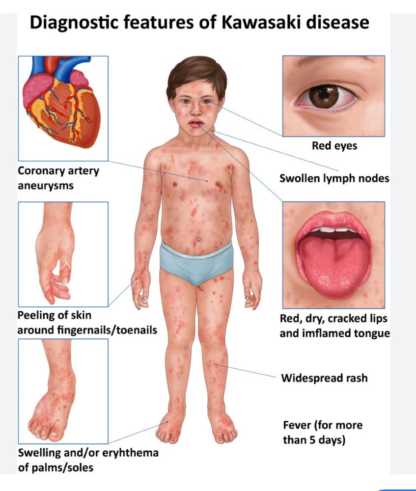

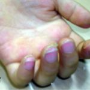

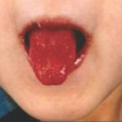

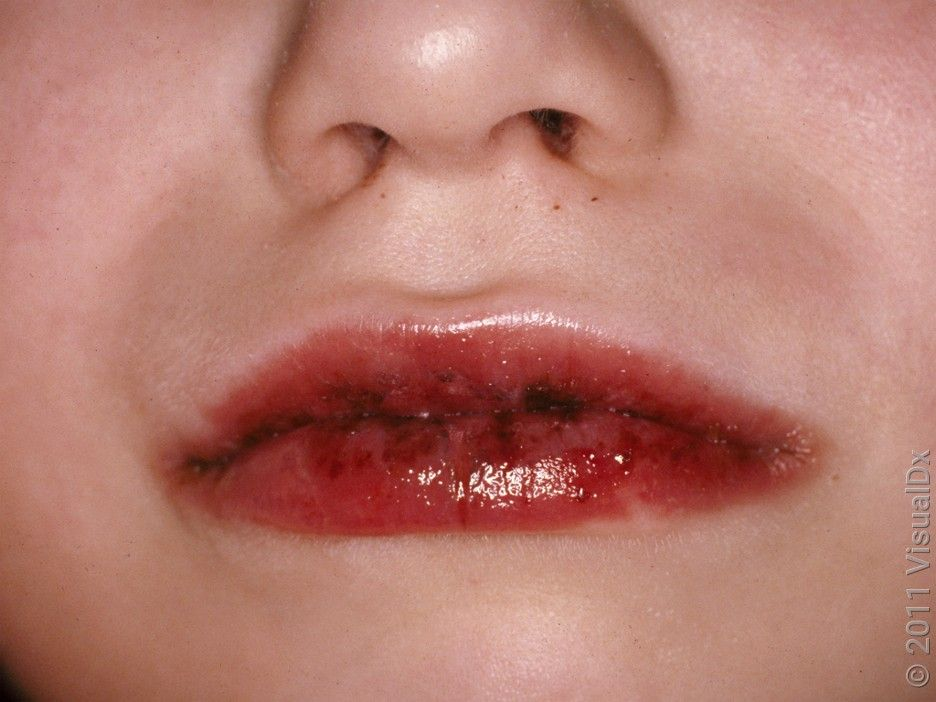

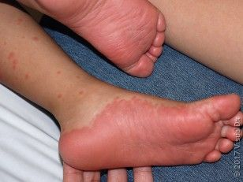

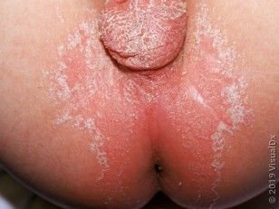

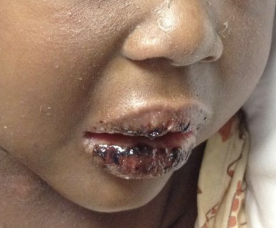

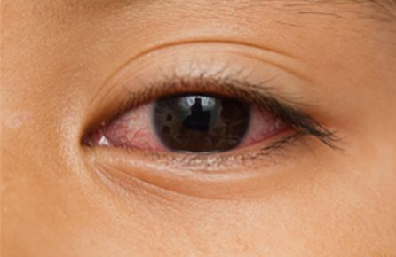

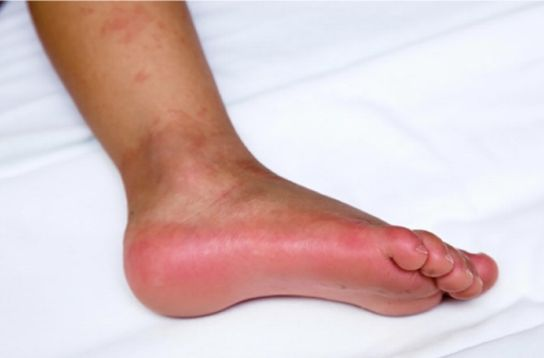

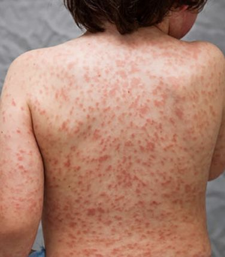

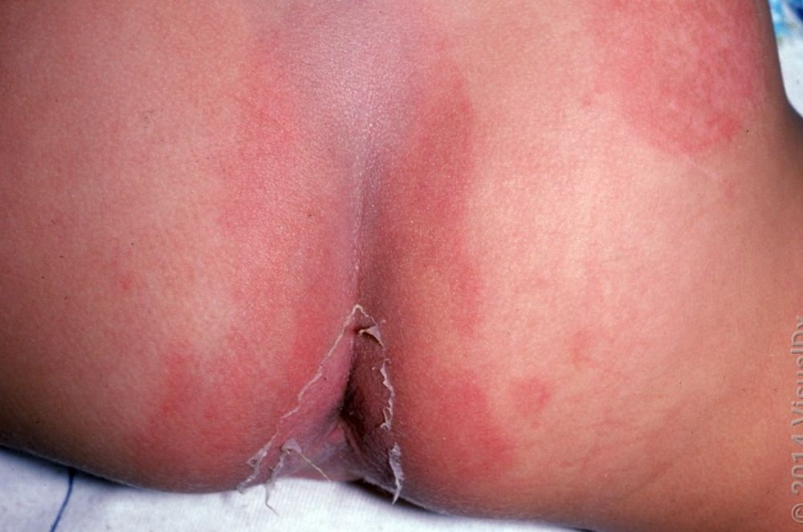

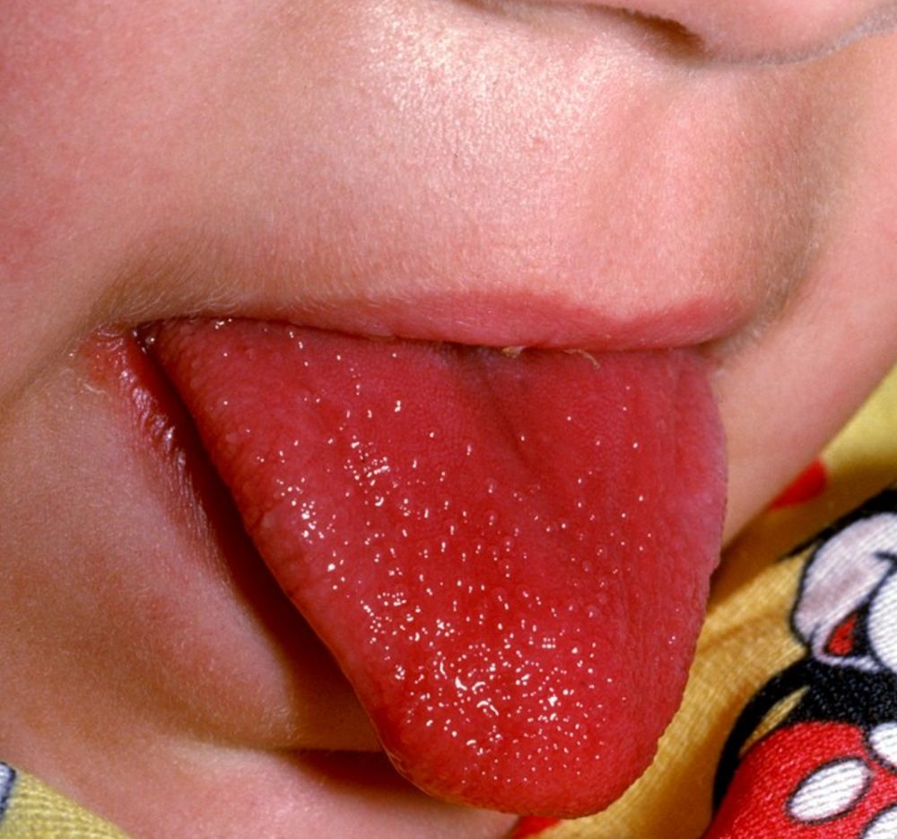

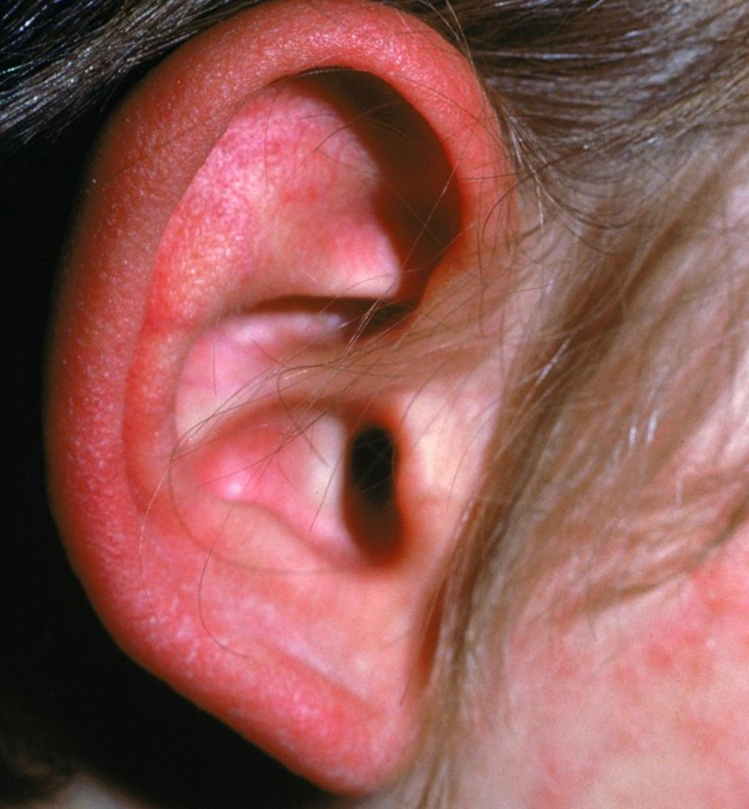

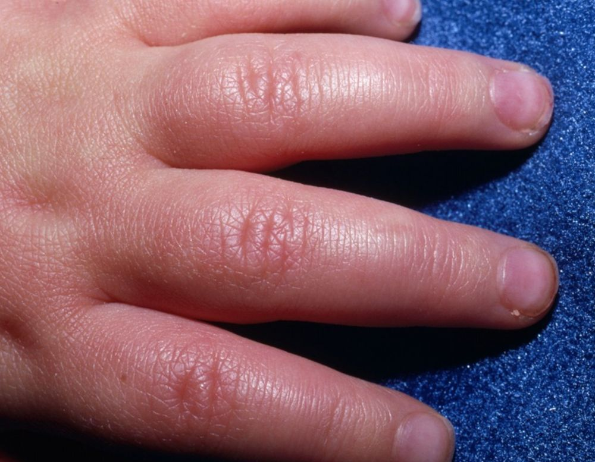

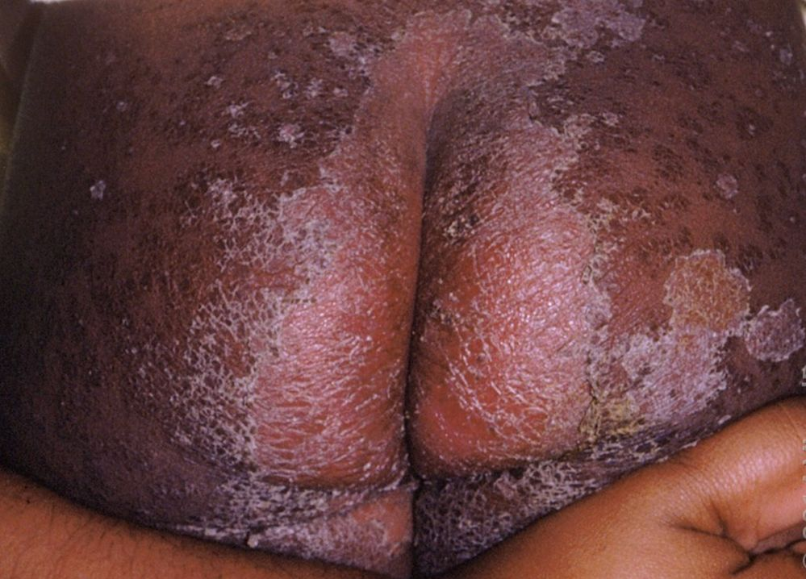

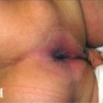


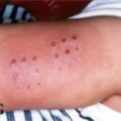

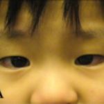
Na Skin Prime
Como podemos ajudar
O texto sobre Doença de Kawasaki não cita procedimentos específicos entre os oferecidos pela clínica. A conduta é definida em consulta: nossa equipe avalia as manifestações na pele e orienta o tratamento ou o encaminhamento adequado.